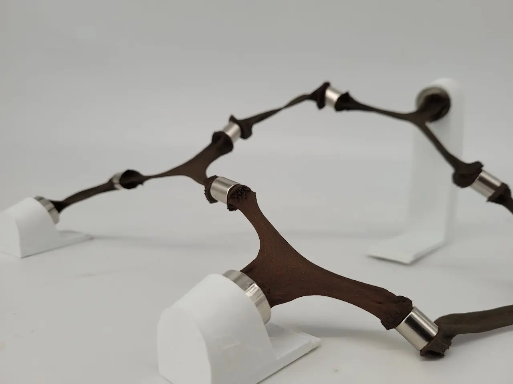
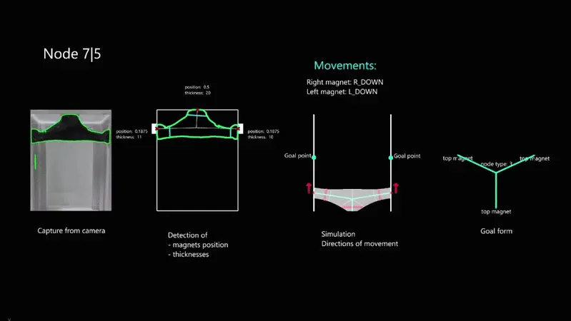
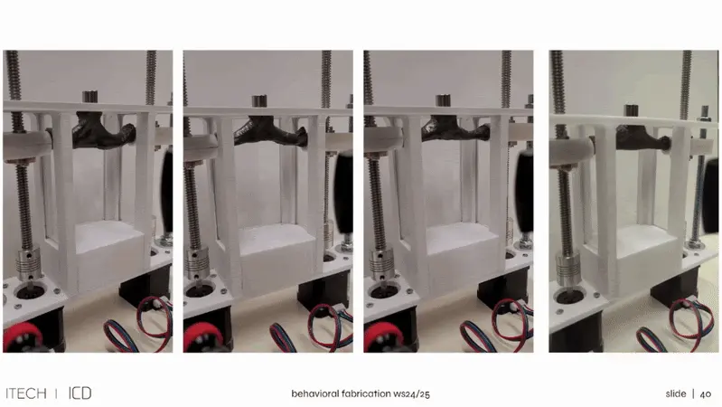
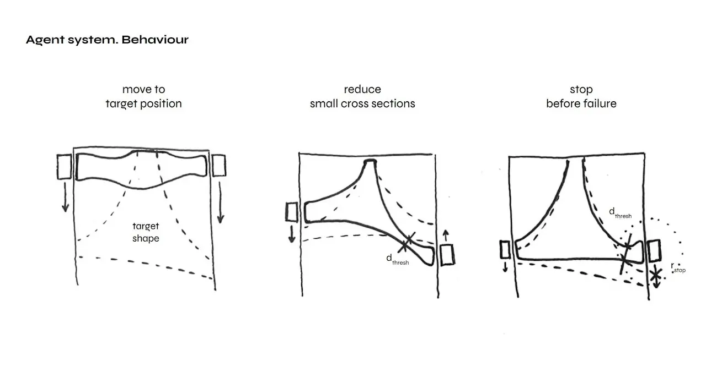
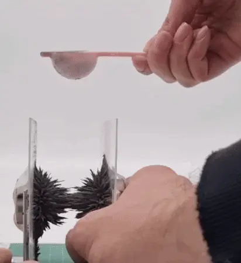
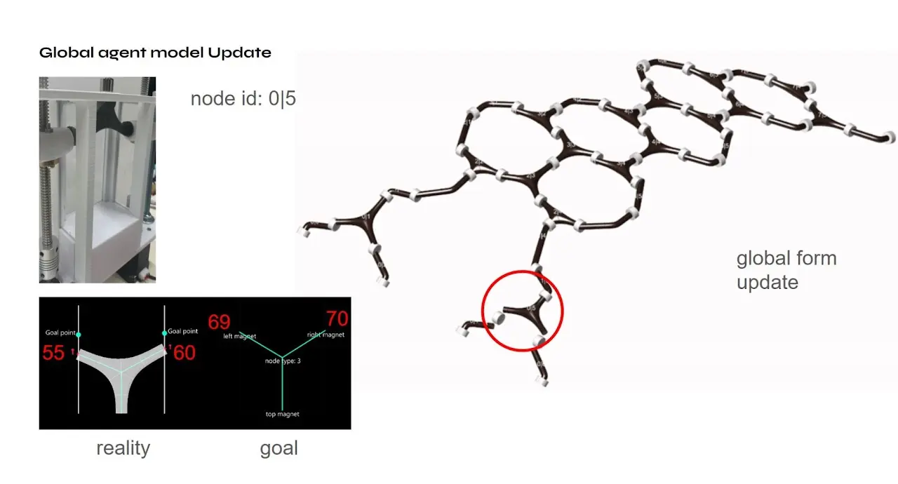

research
Magnetic Behavioural Fabrication

- context
- ITECH Seminar
- year
- 2024
- type
- research
MagnAgent is a design-to-fabrication research project that develops an agent-based methodology for the automated fabrication of branching node structures using magnetically controlled, material-driven form generation. Addressing the high complexity and cost of conventional node fabrication, the project explores ferro-magnetic composites—ultimately identifying iron-powder slime as an elastic, shapeable, and solidifying material—and couples their physical behavior with a computational agent system. Digital node agents negotiate geometric intent against fabrication constraints, while fabrication agents (moving magnets driven by stepper motors and Arduino control) physically realize the form through a closed feedback loop between sensing, simulation, and actuation. The workflow adapts in real time to material limitations such as gravity, rupture, and minimum cross-sections, enabling scalable branching configurations without predefined final geometry. The research culminates in a small-scale demonstrator of seven nodes fabricated through a semi-automated to fully automated process, demonstrating the feasibility of a responsive, material-aware design-to-production pipeline for complex architectural node systems.







